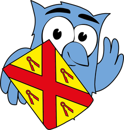

Kies de winnaar-show
Hier staan tien varianten van de show die de winnaar bekendmaakt (1 t/m 10) en tien geluiden (A t/m J). Zet je geluid aan. Alles speelt met verzonnen teams. Stoppen kan met het kruisje rechtsboven of de Esc-toets. Laat daarna weten welke show en welk geluid je wilt, bijvoorbeeld "show 3 met geluid D".
Shows 1 t/m 10
Geluiden A t/m J
Elk geluid speelt met de kleuren van show 1. Je kunt een geluid ook bij een andere show horen: kies het hierboven bij "Geluid bij de shows".